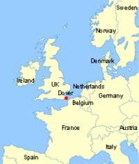

Dover
 De: La Frikipedia, la enciclopedia extremadamente seria.
De: La Frikipedia, la enciclopedia extremadamente seria.
De la serie Grupos musicales:
| Origen
|
Ui... El día de la bestia.
|
| Tiempo
|
Hace mucho, mucho, pero que mucho tiempo.
|
| Estilo
|
Nirvana, Prince, actualmente Dady Yankee -.-
|
| Discográfica/s
|
El diablo
|
| Miembros
|
666
|
| Estado
|
infra-muertos
|
| Sitio web
|
www.dover.es .
|
Dover es una tapadera de una organización satánica.
Se iniciaron en el principio de los tiempos sacando del infierno un disco (de piedra y con gramófono incorporado), llamado Devil Came to Me (en español: "Cruela DE-VIL Come de Tó").
Es un grupo que por cantar en ingles se cree mas superior y en verdad en todos los directos (cuando no hay ordenadores de por medio) dan una voz peor que la de la antes muerta que sensilla (ver youtube video los 40 let me out). La cantante urge immediatamente una operacion general, porque es horrorosa.
También es una ETT, ya que despidieron a un bajo para contratar a otro.
Cruela de Vil nada más levantarse.
Sus Objetivos
- Apoyar a Satán, y divulgar su culto.
- Usar el Inglés.
Discografía
Como ya se ha dicho antes, Dover es una tapadera, por lo tanto cada disco tiene un mensaje oculto:
- Existe la leyenda de que sacaron un disco llamado Sister, pero es falso. Este error ha marcado generaciones, y es una de las razones por la cuales nunca se debe confiar en la Wikipedia, y ante la duda hay que consultar la Frikipedia.
- Devil Came To Me: En este disco se escucha a Cruela de Vil comiendo niños y eructando el nombre del demonio. En el disco original (que no se encuentra en el eMule), hay versos de Garcilaso de la Vega, y frases históricas de Bisbal. Es el único disco del cual se puede mostrar la portada, ya que en los otros es tan sacrílega que no aparecen ni en el Google.
Alguien duda que Dover no sea satánico pues?
- Late at Night (en español: "lo hicimos mú que mú tarde"): Se hace referencia a lo tarde que llegó este disco y que no pudo llegar a tiempo para el efecto 2000.
- I Was Dead for Seven Weeks in the City of Angels (en español: "venimos de la ciudad de los ángeles y hemos tardado 7 semanas en darnos cuenta"): Éste disco es una apología a la caída del Angel caído del cielo de los Teletubbies.
- The Flame (en español: "te flameé"): Es un disco raro. Se supone que el título salió cuando los oscuros esbirros que hay detrás de Dover flamearon un flameado de Moe.
- Follow the city lights (en español: "Íba tan fumao que no podía ni seguir las luces citadas"): No tengo ni pajolera idea de donde se sacaron de la manga éste críptico título.
- 2 (en español "2"): el disco se llama así porque es un recopilatorio que vienen en dos cds... original...
Base secreta de Dover
 Pues eso, la base está en el punto rojo.
Enlaces externos
Ninguno de los enlaces expuestos arriba da más detalles sobre Dover. Además tampoco se asegura que tengan nada relacionado con este artículo.
Autor(es):
- Krusher
- Nexo
- Sethiric
- Aque
- Roms
- Polimen
- Diecarr
- Groovy
- Cibercrank
- Dark temptation
Frikipedia 2005-2016, Licencia
GFDL 1.2 - Extraído por FrikiLeaks